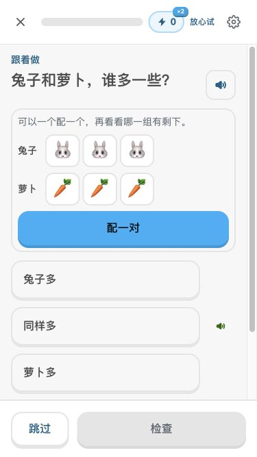
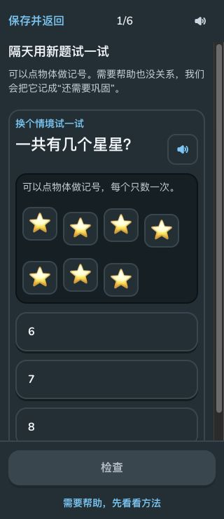
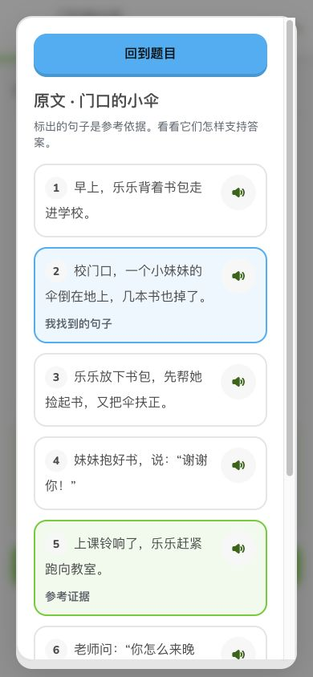
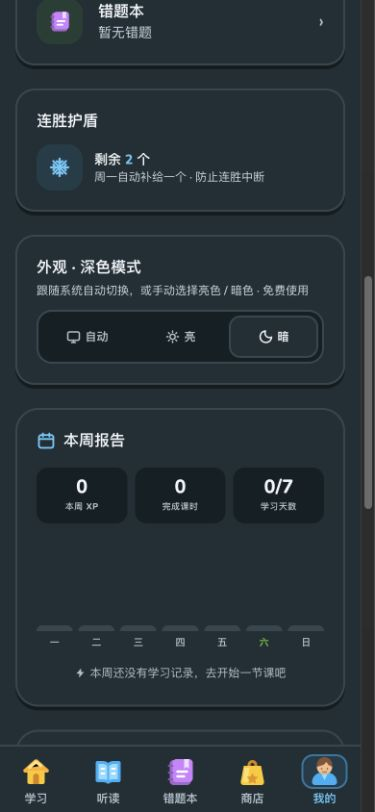

视觉与交互打磨
实际生产页面前后对比
2026-10-17 · 聪聪学堂 Web
根据“配色发灰、图标单薄”的反馈，重新收紧表面颜色，替换主导航、教材、成长与状态图标；同时统一按钮、字体、间距、动效，并优先修复手机首屏。
图片来自两个真实静态生产版本，未做像素修图。手机对比均为390×844视口；浏览器滚动条会占用部分宽度。测试记录、宝石与任务进度可能不同；截图用于评估结构与视觉，不代表同一存档的像素差分。下方点击图片可看原图。
白色底面主操作绿选中蓝错误红中性边框
可复核的变化
| 390×844 比较课 | 修改前 | 修改后 |
|---|
| 题干顶部 | 652.25px | 110px |
| 检查按钮顶部 | 998.75px，首屏之外 | 778px，首屏可见 |
| 三个选项宽度 | 335 / 283 / 335px | 306 / 306 / 306px |
375×667的小屏另作紧凑留白处理，第三个选项底部572px，检查栏顶部583px，三个选项均完整可见。按钮标准高50px、圆角16px、底部深度4px；小型功能控件至少44px。界面使用Nunito与中文系统字体回退。
年级选择
彩色成长图标；统一选中态和按钮，六个年级在首屏可浏览。
年级教材页
白色底面、双色书本图标；移除黑字色块与重复学科标签，导航换为实心插画。
学习路径
教材切换复用书本图标，状态栏取消彩色胶囊，示范单元入口更紧凑。
示范单元
统一标题、卡片和入口尺寸，保留学习证据与隔天检验。
配对比较练习
题干提前到110px；题目、配对图、选项在滚动区域，检查操作保持可见。
聪聪衣橱
缩短手机预览区并修复吉祥物裁切，统一卡片和操作尺寸。
我的主页
任务与成就使用同系列图标，白底与中性边框，减少顶部空占位。
阅读答题
共用题干与按钮，原文、选句和参考依据继续可用。
额外实测
375×667：三个选项与检查栏
320px：隔天检验，十格框50×48px
阅读题参考依据弹窗
深色主题设置与布局
测试与边界
231项core测试、Web/core类型检查、Web体验、学习质量、24个题目状态检查通过。8类页面×4种宽度共32项布局检查通过；生产导出3903页，静态导航5152个引用缺失0，题库/静态资源完整性错误0。
实际浏览器还验证年级选择、设置弹窗、键盘选项、中文选字、数字输入、错答回练、结课、阅读证据与隔天检验。隔天场景通过正式导入入口加载专用测试存档，没有修改浏览器时钟。
参照Duolingo Web公开页面及官方设计文章的饱满插画、平面色彩、硬底按钮与清晰反馈。观察到公开引导继续按钮高50px、圆角16px、底边4px。本项目使用自绘图标和自身熊猫角色，没有复用其专有字体或品牌图稿，未宣称100%一致。按钮文字对比度保留可读性要求。
浏览器视口验证不等于手机真机或儿童可用性测试；尚未完成iOS Safari、安卓实机与学生试用。
完整验收记录